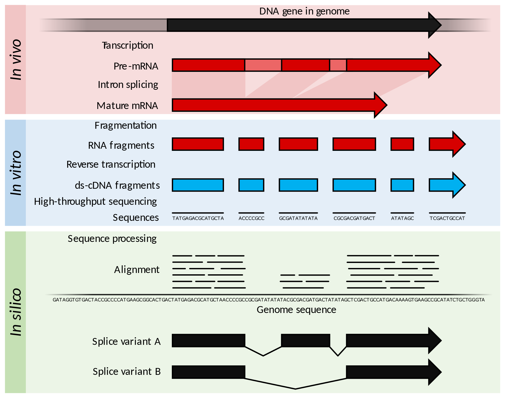
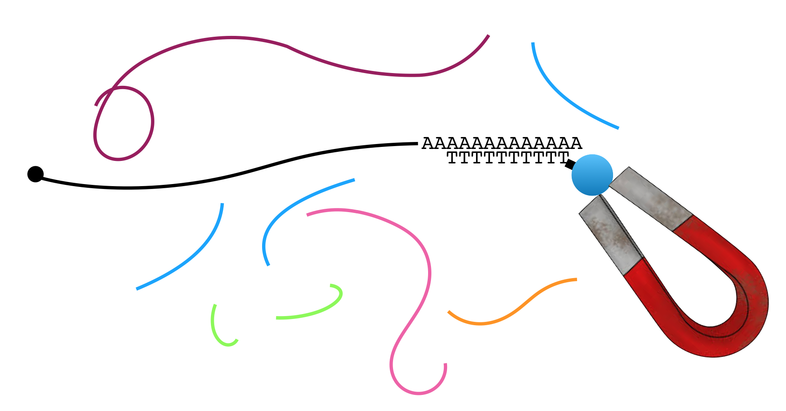
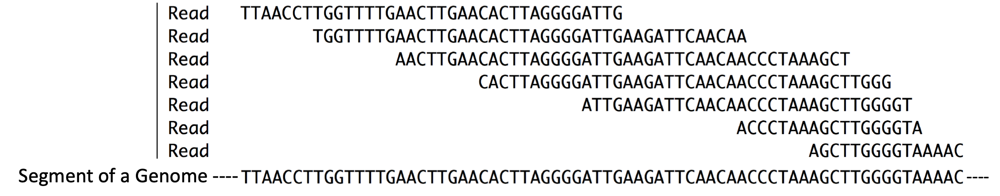
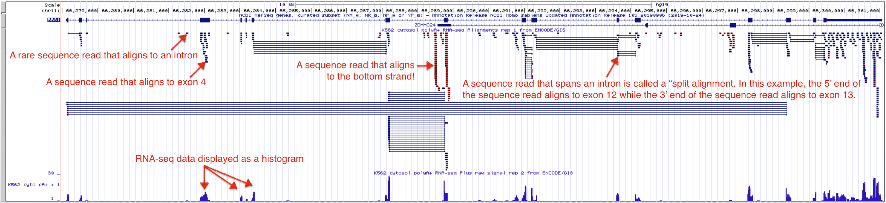
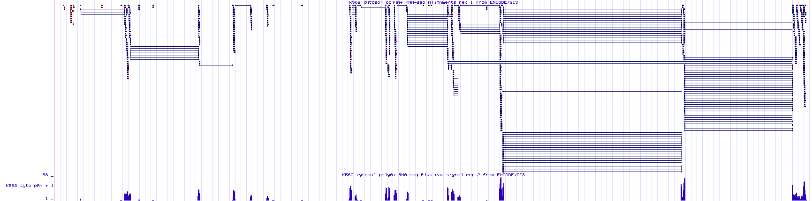

3 Gene Discovery with RNA-seq
In this chapter, you will learn how RNA sequencing can be used to determine where genes are located in the genome. To follow along with the text and to answer the “Test Your Understanding” questions, start with the “RNA-seq” session at the UCSC Genome Browser. You can also use this link as a starting point to view RNA-seq data for any gene of interest.
3.1 Gene expression Reviewed
For a cell to utilize a gene it must be expressed. When it is expressed, it is either transcribed to produce a functional RNA (i.e. tRNA) or transcribed and translated to produce a functional polypeptide (i.e. actin). In both cases, the first step in producing a gene product is ALWAYS transcription. It logically follows that if you extract RNA from a cell, sequence it then find the regions in the genome with matching sequence, you have discovered regions of the genome that have been transcribed. Regions of the genome that are transcriptionally active pinpoint the position of genes. The most important take home message for this chapter: RNA sequence provides important physical evidence to identify and locate genes in the genome.
3.2 RNA-seq
RNA sequencing allows one to determine which segments of the genome are transcriptionally active and thus serves as evidence for the existence of genes. The basic steps involved in RNA sequencing are outlined in Figure 3.1 with the focus on a single gene. In brief, mRNA is extracted from cells, fragmented into pieces then converted into double-stranded DNA (Figure 3.1, see in vitro). These short DNA fragments are then sequenced and computationally aligned to the genome sequence. Notice that the sequence reads only align to the exon portions of this gene in the genome. This is because mRNA was sequenced. mRNA typically contain intron sequences (see in vivo17). Conversion of mRNA to DNA typically occurs after splicing is complete although sometimes intron fragments are sequenced.

Figure 3.1: Source: Wikipedia
Again, when mRNA is specifically collected for RNA-seq, this technique specifically identifies protein coding genes. It also identifies exon-intron boundaries since introns are absent in mRNA and thus not sequenced18. To enrich for mRNA, one can exploit one of two features unique to mRNA: All mRNAs possess a 5’ cap structure and a 3’ poly A tail (a string of adenines).
Figure 3.2 demonstrates how the poly A tail can be used to purify mRNA from total RNA19 for RNA-seq and other applications. In brief, mRNA (black) is separated from all other types of RNA (all other colors) through the use of oligo dT-magnetic beads. Oligo is short for oligonucleotide, a short strand of single stranded DNA. Oligo dT is a single-stranded oligo that consists only of thymines. As a result, only RNA molecules with poly A tails will bind (or hybridize) to the magnetic bead-linked oligo dT through base pairing.

Figure 3.2: A common mRNA extraction method involves the use of magnetic beads attached to oligo dT. The oligo dT binds the poly A tail present on mRNA. The magnet captures the mRNA while the other types of RNA are removed during a washing step.
The magnet holds on to the beads that are bound to mRNA (NOTE: Each bead actually has thousands of oligos attached and thus binds thousands of mRNA in the sample). All other RNAs can now be washed away. Then to separate the poly A+ mRNA from the oligo dT magnetic beads, gentle heat is applied. Once the mRNA has been collected, it can be broken into fragments in a variety of ways. In one methods, a light treatment with an enzyme called RNAse III is used. RNase III cleaves at random to break phosphodiester bonds in RNA chains.
Next the RNA fragments are converted into DNA. But how? Most DNA polymerases are so-called DNA-dependent, DNA polymerases and by definition cannot use RNA as a template for DNA synthesis. Luckily, retroviruses encode a unique type of DNA polymerase known as reverse transcriptase, which is an RNA-dependent DNA polymerase! Like most DNA polymerases, however, reverse transcriptase can only add new nucleotides to the 3’ end of a pre-existing chain. Thus, a primer is needed. There are two options: 1) the use of so-called random primers 20 which will anneal at ‘random’ along the fragmented RNA molecules to prime DNA synthesis or 2) the use of a sequence specific primer that has been designed to anneal to an RNA oligo that had been ligated to the 3’ end of all the fragmented RNAs. Whichever method is used to prime DNA synthesis, the resulting DNA produced is called complementary DNA or cDNA (it is complementary to the template RNA). The millions of unique cDNA molecules converted from RNA fragments are then sequenced using a high throughput sequencing method (i.e. Illumina or Ion Torrent). All the millions of short “sequence reads” obtained are then computationally aligned (Figure 3.1, in silico21) to a reference genome assembly. In Figure 3.3, you can get a sense for what it means to align sequence reads to a reference genome22. So long as a sequence read is long enough you can align it to a single region of the genome with confidence.

Figure 3.3: Reads = Sequence reads. They are typically short. These sequence reads align (match) the short segment of genome shown below. Compare the sequences that are placed directly above one another.
In summary, RNAseq provides unbiased, experimental evidence that a given segment of a genome is transcriptionally “active” and thus harbors a gene. Why do I say “unbiased”? No prior knowledge about the gene sequence or location of the gene in the genome is necessary for a gene to be identified. Moreover, RNAseq can reveal how transcriptionally active a gene is in a given RNA sample by keeping track of the number of reads that map to a specific site in the genome. Genes that are highly transcribed are expected to produce on average more sequence reads than a gene that transcribed to lower levels. That said, the absence of sequence reads for a given segment of genomic DNA does NOT indicate the absence of a gene in that region of the genome. After all, muscle tissue is not expected to express the same set of genes as brain tissue. That said, more and more genes will be identified by RNA-seq as more and more RNA-seq experiments are performed using RNA extracted from different types of samples (and different environmental conditions).
The take home messages: RNAseq is a misnomer, RNA is NOT sequenced directly. Only DNA that is made using RNA as a template is sequenced!
3.2.1 Test Your Understanding
- RNA-sequencing involves the sequencing of which molecule (DNA, RNA or protein)?
- True or False: In order to purify mRNA for RNA-seq (not tRNA, rRNA etc) you can use magnetic beads covered in random primers.
- True or False: In order to purify mRNA for RNA-seq (not tRNA, rRNA etc) you can use magnetic beads covered in oligo dT primers.
- What type of polymerase is Reverse Transcriptase?
- What purpose does RNAse III serve in the RNA-sequencing method?
- In general, where can RNAseq reads map (given high levels of gene expression)?
3.3 Understanding the Encode RNA-seq Evidence Track
The UCSC Genome Browser contains numerous evidence tracks containing RNA-seq data from a variety of labs and institutes. Again, these tracks are useful for visualizing regions of the genome that are transcriptionally active. We will focus on one evidence track entitled, “Encode RNA-seq…” that maps RNA sequencing data from the ENCODE project. The overall goal of the ENCODE project is to identify and characterize transcribed regions of the human genome. I like this evidence track because it lets you see the alignment of individual sequence reads to the reference genome.
To load the Encode RNA-seq evidence track focused on BBS1, click on the “RNA-seq” session link. Your evidence track display window will look like Figure @ref(fig:seqreads (excluding my annotations in red). Scroll down to the “Expression” category to see that the “Encode RNA-seq…” evidence track is now set for “show”. Also, notice we are viewing the 2009 Genome Assembly. This is because the “Encode RNA-seq…” evidence track is only available for this genome assembly and not the newer 2013 genome assembly. Why? Evidence tracks are curated by real people (groups of scientists). When scientists change jobs or move to new projects they may not always be available to update an evidence track so that it can be used with more recent genome assemblies.

Figure 3.4: The Encode evidence track here shows high throughput sequencing of RNA samples from the K562 immortal cell line. The Alignment view on top shows where the sequence reads align to the genome including alignments that map to a single exon and split alignments that are interrupted by an intron. Sequences determined to be transcribed on the positive strand are shown in blue. Sequences determined to be transcribed on the negative strand are shown in red. Click on the image to enlarge.
The RNA-seq data displayed in Figure 3.4 corresponds to an RNAseq experiment performed at the Genome Institute of Singapore in 2009. In this experiment, RNA was extracted from K562 cells, an immortal cell line that was established in 1970 from fluid that built up around the lungs of a 53-year-old woman with chronic myelogenous leukemia. The extracted RNA was purified over a column containing oligo dT magnetic beads aimed at enriching for polyA+ RNA (mRNA) and removing contaminants (e.g. rRNA, tRNA, DNA, protein etc.). The mRNA was then fragmented into small, random-sized pieces then converted into cDNA by reverse transcriptase. This cDNA library23 were amplified by PCR24 then sequenced. Short, 35 bp sequence reads were collected and computationally aligned to the genome assembly. How did I know all this? Right click on the gray rectangle at the far left of the Encode RNA-seq evidence track to view its “Track Settings” page. Scroll down to read the “Methods” then when you are done click on the K562 link to learn more about the cell line used in the study. The UCSC Genome Browser is rich with information worth exploring. If you ever get lost down a rabbit hole simply click the the “RNA-seq” session link to get back to the beginning.
The RNA-seq data is displayed in the UCSC Genome Browser in two ways: as individual sequence read alignments and as a histogram. In the top half of the evidence track, the sequence read alignments are displayed in blue or red. The tiny blue horizontal lines represent reads that align and match the top strand (these sequence reads align to BBS1, a top strand gene), while the tiny, red lines represent sequence reads that align and match the bottom strand (these sequence reads align to the position of bottom strand genes). Notice that some sequence read alignments are interrupted by a very thin, horizontal line. These are called “split alignments”.
Split alignment sequence reads are less intuitive. Recall that this RNA-seq experiement involved the sequencing of fragmented mRNA (not tRNA, rRNA, pre-mRNA etc.). Since mRNAs lack introns and the RNA fragmentation process is random, a single sequence reads can align to two adjacent exons in the genome. To indicate that a single sequence read aligns to two adjacent exons, they are connected by a thin line. These types of sequence reads are particularly useful because they provide information about the position of exon-intron junctions. Review Figure 3.5 to view an example of a split alignment spanning a particularly short intron found in a gene called PLXNA3. In this figure I provide the actual sequence of a sequence read and a pairwise alignment to the genome. You can see this type of information for yourself by clicking on any individual sequence read. This action takes you to the sequence read information page.
![The top panel contains the sequence data for a single sequence read (read ID: 222_675_1710). The middle panel displays the alignment between this sequence read and the reference genome. Regions identical in sequence are boxed and connected by lines. Notice that the alignment is *split*. **This is because the sequence read does NOT align to one single contiguous stretch of genomic DNA**. The bottom panel is a display of all the sequence read alignments that map to a small region of PLXNA3 including 222_675_1710 outlined in red. In this region, I count 6 split alignments that span intron 24 of PLXNA3. Click image to enlarge.](static/images/splitalignment.png)
Figure 3.5: The top panel contains the sequence data for a single sequence read (read ID: 222_675_1710). The middle panel displays the alignment between this sequence read and the reference genome. Regions identical in sequence are boxed and connected by lines. Notice that the alignment is split. This is because the sequence read does NOT align to one single contiguous stretch of genomic DNA. The bottom panel is a display of all the sequence read alignments that map to a small region of PLXNA3 including 222_675_1710 outlined in red. In this region, I count 6 split alignments that span intron 24 of PLXNA3. Click image to enlarge.
The bottom section of the Encode RNA-seq window shows the sequence read data as a histogram (Figure 3.4). As in all histograms, the Y-axis represents frequency (in this specific case, it represents the number of “reads” counted or “read counts”) and the X-axis represents chromosomal position (in bp). In general, the histogram graphically describes how many sequence reads are found to align to a given nucleotide position in the genome. The taller the peak, the more “reads” that are counted for that particular nucleotide. You should know our evidence track is configured so that the histogram data for the bottom strand is hidden and the maximum number of reads found in the window is shown on the Y axis. To better understand how to read the RNA-seq histogram data, zoom into exon 4 of BBS1. Your view should look like Figure 3.6. At this level of resolution, you can better count individual sequence reads. Notice the maximum number of reads in the Y-axis has changed to 11 (used to be 58). Also, notice that the number of reads for any given nucleotide position along exon four varies depending on the number of read counts for that nucleotide.

Figure 3.6: A close up view of exon 4 of BBS1. Notice the Y axis for the histogram indicates that the maximum number of sequence reads that map to this region is 11. The height for any given region of the histogram is determined by the number of reads counted. On the left, I highlight a region of exon 4 that has 5 total reads. On the right I highlight a region of exon 4 that has 2 total reads. Click image to enlarge.
3.3.1 Test Your Understanding
The following questions correspond to the RNAseq data collected from K562 cells – start with the “RNA-seq” session link. Submit your answers online but also write them down so that you can compare them to your answers in the next set of questions below.- How many sequence reads map to exon 6 of BBS1
- How many split alignment reads connect exons 16 and 17 of BBS1?
- Search for the neighboring gene, ZDHHC24 (zoom out or search by name). Are there a significant number of sequence reads that align to ZDHHC24 (more than say 1-2)? NOTE: Before you answer, think about how you would recognize them given this is a negative strand gene.
- Search for the neighboring gene, ACTN3 (zoom out or search by name). Are there a significant number of sequence reads that align to ACTN3 (more than say 1-2)?
You have been evaluating RNAseq data collected from K562 cells. Let’s look at a different RNAseq experiment. To switch data sets, click on the gray rectangle (at left) corresponding to the “Encode RNA-seq” evidence track to view the track settings page. Within track settings, unclick the K562 data set and click on the H1-hESC data set. To see what type of cells these are, click on the “H1-hESC” link. Copy (control C) the information in the description column. Now hit “Submit” to go back to the browser display window.
3.3.2 Test Your Understanding
The following questions are about the RNAseq data collected from H1-hESC cells. Submit your answers online but also write them down and compare these answers to the ones you completed above.- What kind of cells are h1-hESC (Copy and paste your answer from the web to avoid typos)?
- How many sequence reads map to exon 6 of BBS1
- How many split alignment reads connect exons 16 and 17 of BBS1?
- Zoom out 10X to find the downstream gene, ZDHHC24. Are there any sequence reads aligning to ZDHHC24?
- Find another downstream gene, ACTN3. Are there any sequence reads aligning to ACTN3?
- How does the RNAseq data compare between the two cell types (K562 cells vs h1-hESC)?
3.3.3 For Discussion
- When BBS1 is transcribed, full length mRNA molecules are produced (from exon 1 to 17). And so one might expect that the number of sequence reads that map to different parts of the gene would be produced at a more or less equal number. They are not. For example, compare the number of sequence reads that align to exon 5 to the number of sequence reads that align to exon 6. Alternatively, compare the number of split alignments that link exons 1 to 2 to the number of split alignments that link exons 11 to 12. Why do you think the number of sequence reads and/or split alignments varies along the length of a single gene?
- What about differences between data sets? Why do you think there was such a profound difference between the RNA-seq data collected from H1-hESC cells compared to K562 cells?
- Finally, compare the exon-intron junctions in the gene prediction track (NCBI Refseq genes) to all the split alignments found experimentally (by RNA sequencing of K562 cells or H1-esc). There is at least one unexpected split alignment read in BBS1 that suggests that there may be an alternative splice form not predicted by the NCBI Refseq gene prediction track. Do you see the same unexpected split alignment read in the H1-ESC data set? Describe the alternative splice form as precise as possible. Do you think this alternatively splice form is real or an artifact of the RNA-seq method? Look at each unexpected split alignment read sequence before you answer.
3.4 Take Home Messages
- RNA-seq data shows which parts of the genome are transcriptionally active (and how active!).
- Because mostly mRNA is “sequenced” (at least that is the goal), RNA-seq reads mostly map to exonic regions (only pre-mRNA has introns).
- Due to gene density in some parts of the genome and because mammlian introns can be long, RNA-seq data alone is not always able to define where a transcript begins and ends.
© 2019, Maria Gallegos. All rights reserved.
“in vivo” is a Latin phrase biologists use to describe a process taking place inside a living organism (online dictionary)↩︎
That said, it is impossible to remove all pre-mRNA and so introns are occasionally sequenced as you will see when you examine the RNA seq data↩︎
Total RNA includes all the RNA molecule types that are found in cells. Total RNA includes mRNA (the only RNA type that is loaded into ribosomes and translated to make protein) and a wide variety of functional RNAs (i.e. tRNA, rRNA, miRNA, piRNA, piwiRNA, 22G and 26G RNA).↩︎
random primers are a mixture of oligonucleotides representing all possible sequence for a given size (i.e. hexamers are common). Random Primers can be used to prime cDNA synthesis (modified from Bioline).↩︎
in silico is an expression meaning “performed on computer or via computer simulation” in reference to biological experiments↩︎
A reference genome (also known as a reference assembly) is a digital nucleic acid sequence database, assembled by scientists as a representative example of the set of genes in one idealized individual organism of a species (wikipedia definition).↩︎
Library: There are many types of libraries in molecular biology including cDNA and genomic libraries. A cDNA library is a complex mixture of cDNA representing all the genes that were transcriptionally active at the time of RNA collection. A genomic library is a complex mixture of genomic DNA fragments that in sum include all the genomic DNA for a given species. The DNA fragments are stored in DNA vectors such that each vector contains a unique insert of DNA.↩︎
the Polymerase Chain Reaction or PCR is a powerful molecular technique designed to make multiple copies of any DNA sequence below a certain size↩︎